El refugi de muntanya del Centre Excursionista de Pego.El refugio de montaña del Centro Excursionista de Pego.
La Figuereta és el refugi del Centre Excursionista de Pego, a la Vall d'Ebo, habilitat per passar uns dies en la natura fent senderisme, escalada, descens de barrancs, espeleologia o turisme rural pels pobles propers: Ebo, Vall d'Alcalà, Vall de Laguar, l'Atzúvia i Pego.La Figuereta es el refugio del Centro Excursionista de Pego, en la Vall d'Ebo, habilitado para pasar unos días en la naturaleza haciendo senderismo, escalada, barrancos, espeleología o turismo rural por los pueblos cercanos: Ebo, Vall d'Alcalà, Vall de Laguar, Adsubia y Pego.
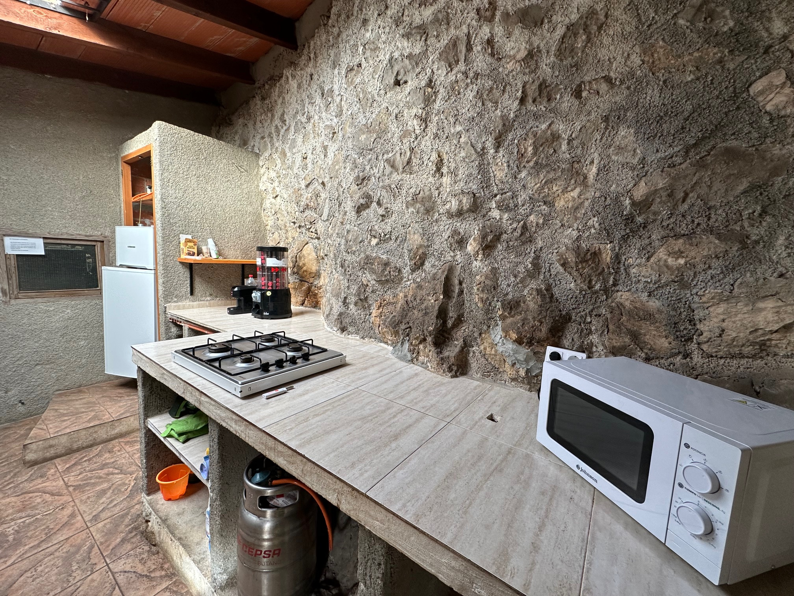
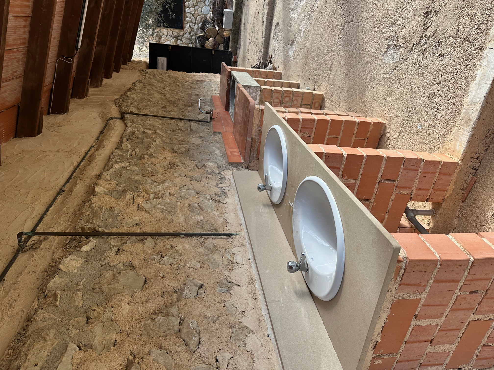
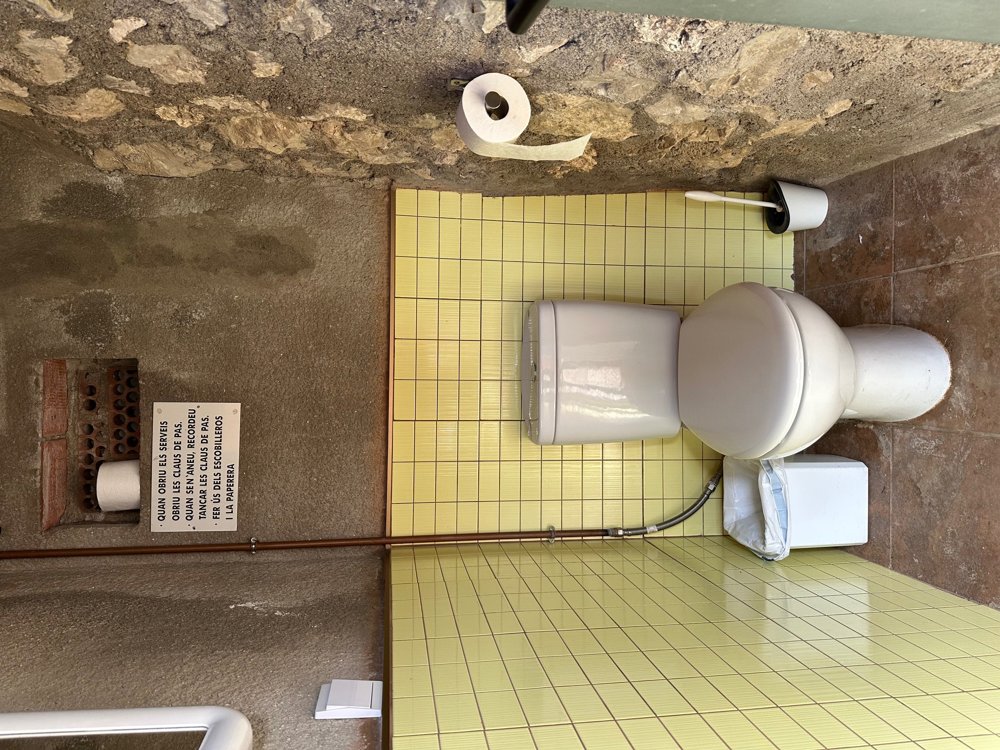
Dos habitacles comunicats amb lliteres, cuina completa i tots els serveis per gaudir de la natura.Dos habitáculos comunicados con literas, cocina completa y todos los servicios para disfrutar de la naturaleza.
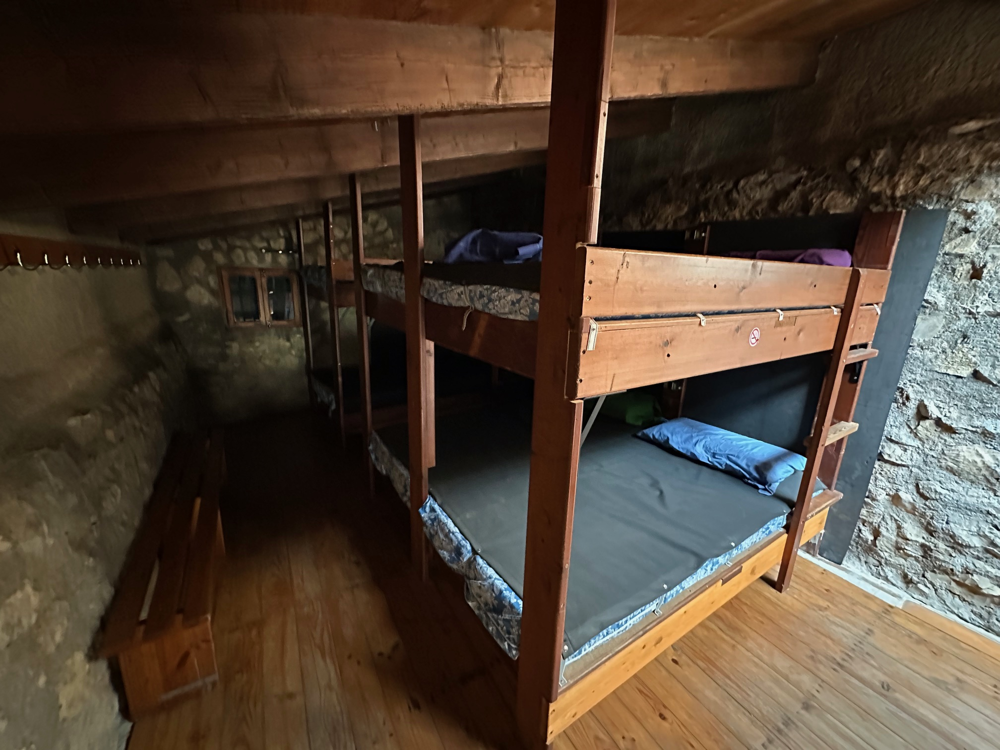
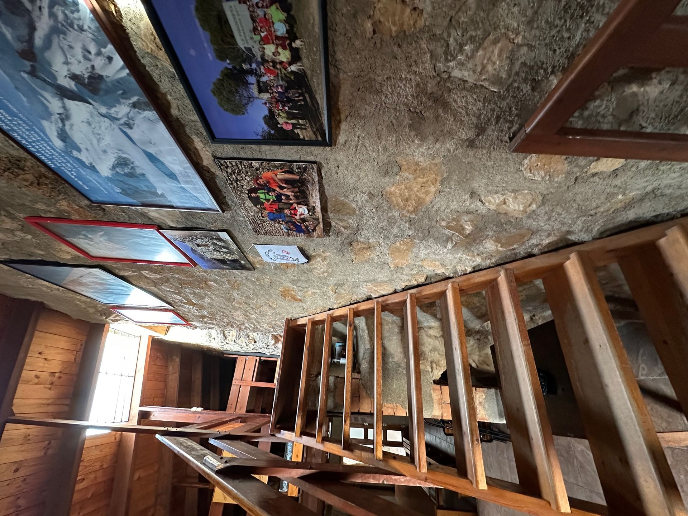
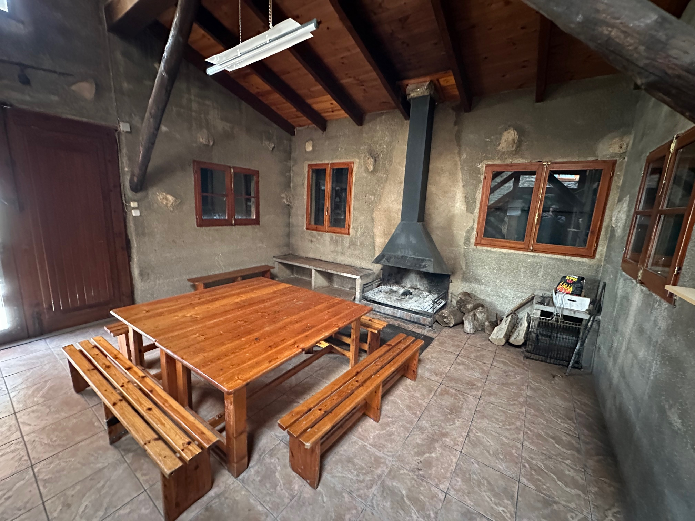
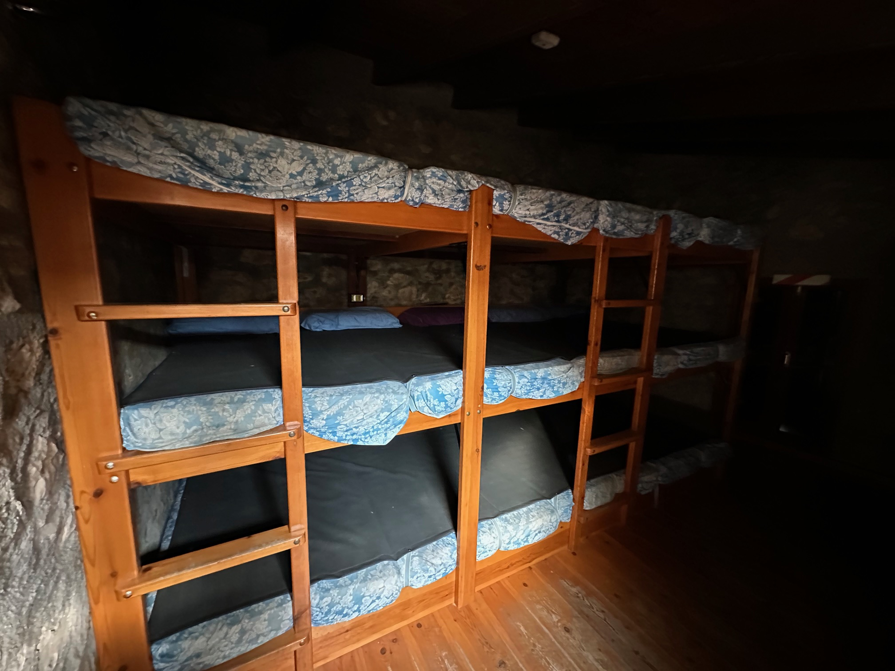
Dos habitacles separats però comunicats. Porta sempre el teu sac de dormir.Dos habitáculos separados pero comunicados. Trae siempre tu saco de dormir.
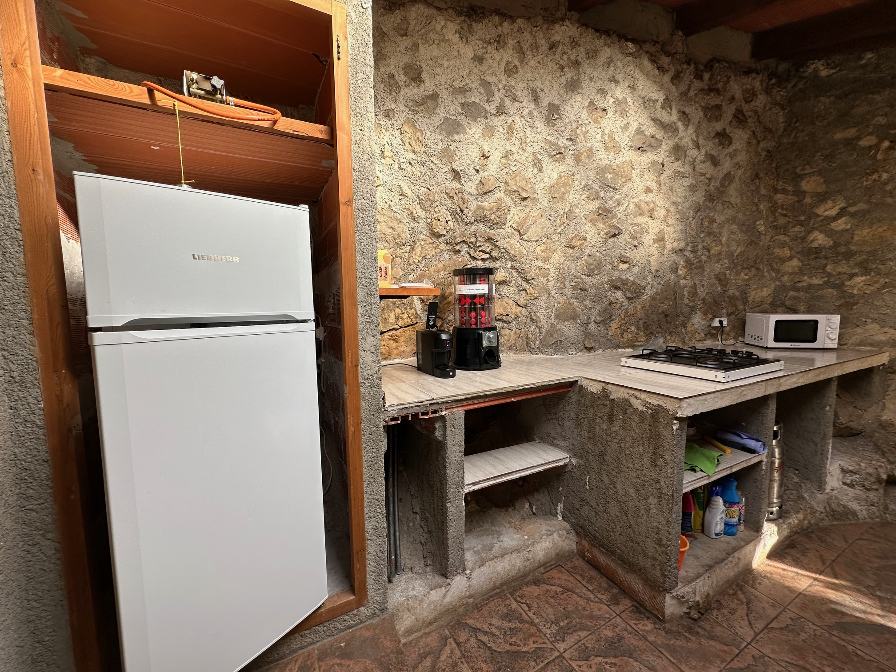
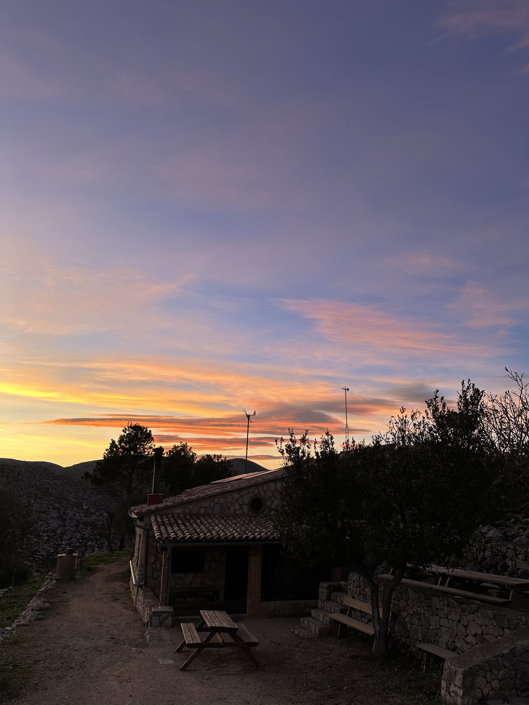
⚠️ L'aigua és d'una cava natural i no és potable: porta la teua per a consumir.⚠️ El agua es de una cava natural y no es potable: trae la tuya para consumir.
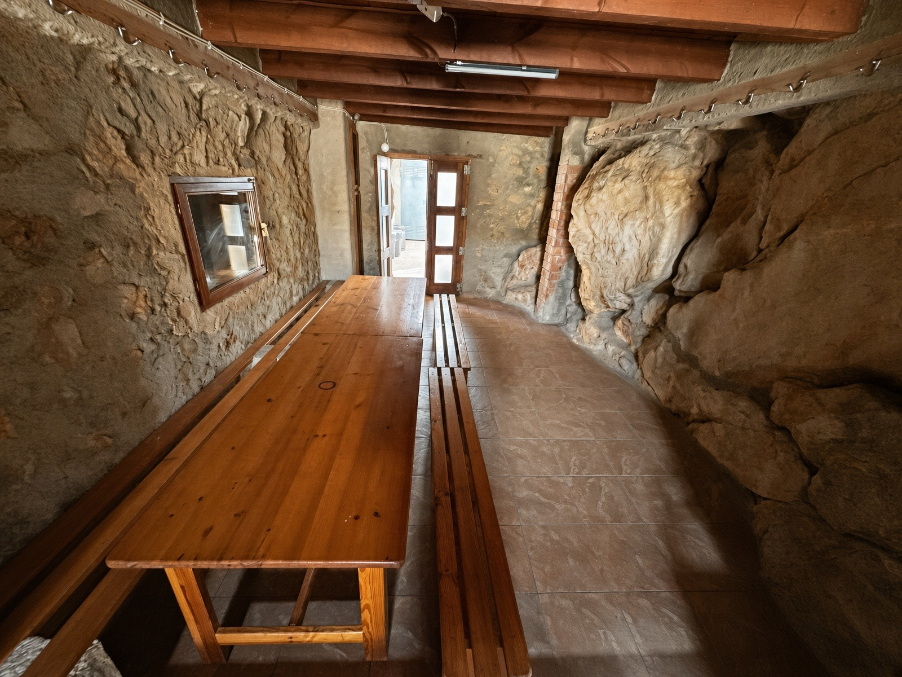
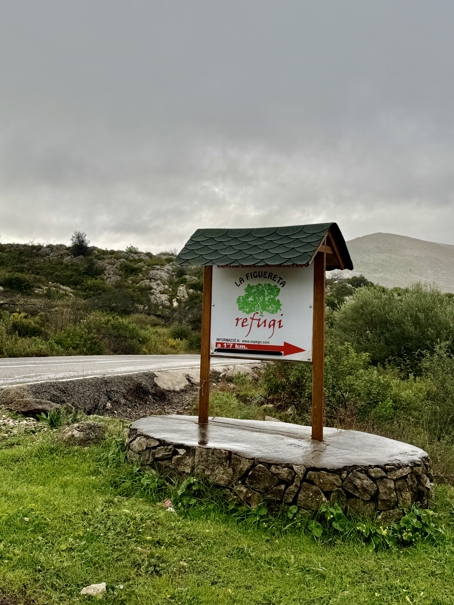
Per la carretera de Pego a la Vall d'Ebo (CV-712), uns 8 km. Quan comença a baixar cap a Ebo, uns 200 m més avall a mà dreta trobem el camí d'accés, ben senyalitzat. Després d'1,7 km s'arriba al refugi.Por la carretera de Pego a la Vall d'Ebo (CV-712), unos 8 km. Cuando empieza a bajar hacia Ebo, unos 200 m más abajo a mano derecha encontramos el camino de acceso, bien señalizado. Tras 1,7 km se llega al refugio.
Google MapsSobre un macís calcari a 540 m, amb vegetació de bosc baix mediterrani —argelagues, margallons, pi blanc— i fins i tot la Llengua de Cèrvol, espècie endèmica i protegida dels avencs de la zona. Al voltant, turisme rural i gastronomia a Ebo, Vall d'Alcalà, Laguar, Gallinera i Pego.Sobre un macizo calcáreo a 540 m, con vegetación de bosque bajo mediterráneo —aliagas, palmitos, pino blanco— e incluso la Lengua de Ciervo, especie endémica y protegida de los avencos de la zona. Alrededor, turismo rural y gastronomía en Ebo, Vall d'Alcalà, Laguar, Gallinera y Pego.